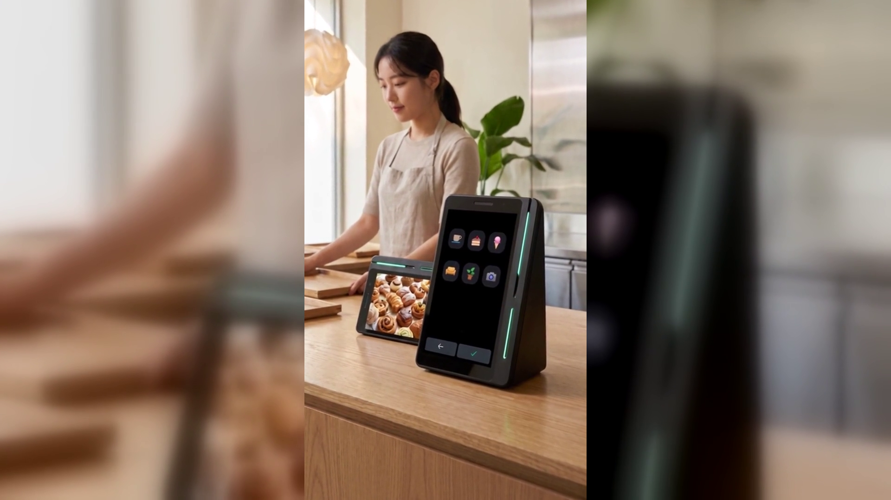

결제만 해도 리뷰가 쌓입니다 — 계산대에서 리뷰를 모으는 방법
결론부터 말씀드리면, 리뷰는 부탁해서 받는 것이 아니라 계산대에서 쌓이는 것입니다.
그런데 대부분의 매장에서 리뷰는 손님이 문을 나선 뒤의 일로 남습니다.
장사를 오래 하신 사장님일수록 이 말을 잘 아십니다.
음식도 서비스도 자신 있는데, 리뷰 한마디만은 입이 떨어지지 않습니다.
카드를 돌려드리면서 "리뷰 한 번만 부탁드립니다" 하고 말하는 순간
손님 얼굴이 살짝 굳는 것을 보신 적이 있으실 겁니다.
그래서 계산대 앞에 안내문을 붙여 보기도 하고,
영수증 아래에 안내 문구를 넣어 보기도 합니다.
그래도 리뷰는 좀처럼 늘지 않습니다.
정작 매장을 아주 마음에 들어 한 손님도 리뷰는 남기지 않고 그냥 갑니다.
싫어서가 아니라, 나가서 따로 할 일이 되어 버리기 때문입니다.
손님이 우리 매장을 가장 좋게 느끼는 순간은 계산을 마치고 나가기 직전입니다.
그런데 리뷰를 쓰는 자리는 그 순간에 없습니다.
집에 가서, 지하철에서, 휴대폰을 꺼내서, 앱을 열고, 매장을 찾아서,
별점을 누르고, 글을 써야 합니다.
마음이 가장 컸던 순간과 리뷰를 쓰는 순간 사이에 여섯 단계가 끼어 있는 것입니다.
그 사이에 마음은 식습니다. 사장님이 부족해서가 아니라
리뷰를 남길 자리가 매장 밖에 있어서 생기는 일입니다.
손님이 계산대 앞에 서 있는 그 몇 초가 가장 좋은 순간인데,
그 순간에 사장님이 쓸 수 있는 도구가 결제기 하나뿐이었습니다.
네이버단말기(Npay 커넥트)의 키워드 리뷰는 그 여섯 단계를 없앱니다.
결제와 동시에 네이버 리뷰가 쌓이는 방식입니다.
손님이 결제를 마치면 손님 쪽 화면에 리뷰 키워드가 뜹니다.
손님은 글을 쓰지 않습니다. 「커피가 맛있어요」 같은 키워드 칩을
손가락으로 고르기만 하면 됩니다.
고른 그 자리에서 포인트가 적립되고 쿠폰이 붙습니다.
사장님은 아무 말도 하지 않아도 되고, 손님도 오래 붙잡히지 않습니다.
여기에 스마트플레이스 쿠폰을 연동해 두면
리뷰를 남긴 손님이 다시 찾아올 이유까지 함께 만들어집니다.
기기는 커피컵 높이의 작은 탁상 기기입니다.
유광 검정에 옆으로 비스듬한 쐐기 모양이고, 옆면에 초록색 불빛이 한 줄 들어옵니다.
화면이 두 개여서 사장님이 보는 큰 세로 화면과 손님이 보는 작은 화면이 나뉩니다.
카운터 모양에 따라 가로로도 세로로도 놓을 수 있어서
좁은 계산대에도 자리를 잡습니다.
결제 수단은 카드와 QR은 물론 페이스사인, 삼성페이까지 받고
해외 손님이 쓰는 위챗페이와 알리페이플러스도 받습니다.
실제로 쓰고 계신 분의 말도 공개되어 있습니다.
네이버페이 공식 이용후기에 실린 김00 · 베이커리 대표의 말입니다.
"결제만 해도 네이버 리뷰가 자연스럽게 쌓이고, 포인트 적립 덕분에 단골 손님이 눈에 띄게 늘었어요."
(출처: 네이버페이 공식 이용후기, 2026-09-16 확인)
리뷰가 많은 매장과 적은 매장의 차이는 사장님의 부지런함이 아닙니다.
손님이 리뷰를 남길 자리를 어디에 두었는가입니다.
매장 밖에 두면 마음이 식는 만큼 줄어들고,
계산대 위에 두면 손님이 결제하는 동안 저절로 쌓입니다.
그렇게 쌓인 리뷰는 내일 우리 매장을 검색하는 손님의 화면에 남습니다.
네이버 공식 안내에도 앞으로 매장 운영에 도움이 될 새로운 기능이
추가될 예정이라고 되어 있습니다(일부 서비스는 오픈 준비 중입니다).
오늘 계산대를 한 번 보시고, 손님이 리뷰를 남길 자리가 그 위에 있는지 확인해 보십시오.
네이버단말기(Npay 커넥트)는 결제가 끝난 자리에서 네이버 리뷰·쿠폰·적립이 이어지는
스마트 사인패드입니다. 쓰던 포스는 그대로 두고 연결만 합니다.
· 상담 문의 · A/S 접수 — 평일 9시~20시 / 토·일·공휴일 11시~17시
· 정품 신제품 보증 · 수도권 직영 설치
누리네트웍스 · 결제는 더 쉽게, 매장은 더 스마트하게
🔗 https://nwpos.co.kr?utm_source=youtube&utm_medium=social&utm_campaign=daily7&utm_content=connect-keyword-review
#네이버단말기 #네이버커넥트 #Npay커넥트 #네이버페이단말기 #키워드리뷰 #네이버리뷰 #리뷰관리 #매장리뷰 #스마트플레이스 #단골관리 #쿠폰적립 #포인트적립 #사인패드 #결제단말기 #카드단말기 #포스기 #포스 #간편결제 #카드결제 #매장운영 #자영업 #소상공인 #자영업노하우 #개인사업자 #가맹점 #누리포스 #누리네트웍스 #Shorts
[SNS아이콘]
[SNS배너]